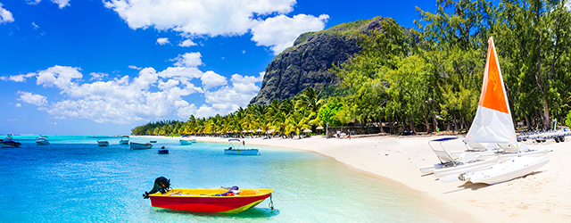
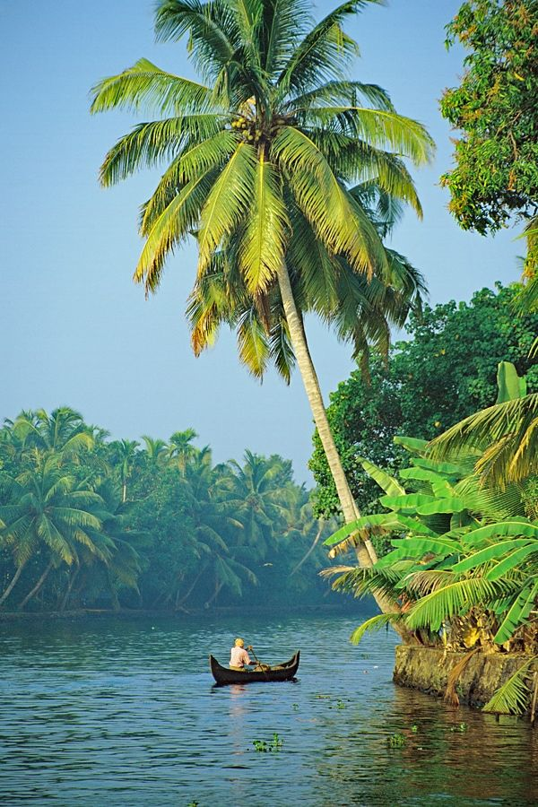

Peru is the third largest country of South America, is it is located at the central pacific cost, it limits with Bolivia, Brazil, and Chile to the east and south, and Colombia and Ecuador to the north. Lima, the capital city well known as "the city of kings" is situated on the central coast and it is a beautiful town of interest due to their architectural and colonial structures that you may appreciate in different points of the City. Peru is divided into 24 departments and counts with 3 important geographic regions such like: the coast, (ocean Pacific), the highlands and the Amazon jungle. Its geographic characteristic gives it a wide versatility of ecosystems and a diverse climate zones, making Peru one of the world's most ecologically varied nations.
READ MOREMauritius
Mauritius is arguably Africa's wealthiest destination, a tropical paradise with tons to do. Port Louis, the modern capital of this 38-mile by 29-mile island, is a bustling port with a revitalized waterfront and a busy market. But most visitors gravitate toward resort areas such as Mont Choisy, quiet Trou-aux-Biches and the more bustling Flic en Flac, popular with scuba divers. Riviere Noire is ideal for those looking for great deep-sea fishing.
READ MOREFrance
France seduces travellers with its unfalteringly familiar culture, woven around cafe terraces, village-square markets and lace-curtained bistros with their plat du jour (dish of the day) chalked on the board.
READ MOREIndia
India's landscapes are as fantastically varied as its cultural traditions. From the snow-dusted peaks of the Himalaya to the sun-splashed beaches of the tropical south, the country has a bounty of outdoor attractions.
READ MORE